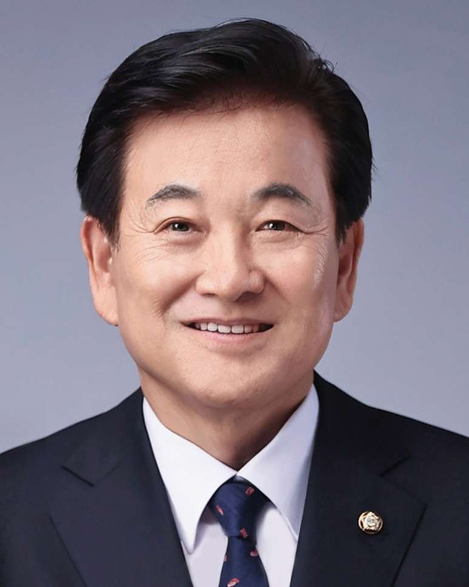

2000년 학회 창립 이후로 정보 산업의 성장으로 인해 현대 사회에서 인터넷의 중요성은 극적으로 증가하고 있습니다. 인터넷은 국방, 국가 안보, 개발의 목적을위한 것이지만 개발과 커뮤니케이션을 위한 국가 산업과의 통합은 국가 경제에 막대한 기여를합니다.
지금까지 컴퓨터 관련 그룹, 학계, 컴퓨터 관련 정보 기술이 많이 있지만 이제 인터넷은 학술 단체의 중심을 연구하고 개발하는 방법입니다. 인터넷 기반 비즈니스 및 정보 기술 비즈니스는 다양한 연구 기관 및 학술 단체가 개별적으로 구축 한 상입니다. 그러나 이제는 기술과 인터넷이 효과적이어야하고, 정보 기술을 통합하여 승수 효과를 달성하고, 이러한 기술의 시너지가 산업 발전을 가져오고 국가 경쟁력을 강화해야합니다.
인터넷 및 정보 산업은 국가의 산업으로 부상하고 있으며,이 분야에서 당면한 어려움을 예측하고 해결하는 것이 시급합니다. 기업과 컴퓨터, 통신 및 기술적인 문제에 종사하는 사람들 간의 모든 전자 정부 거래는 인터넷을 통해 이루어집니다. 인터넷과 정보 기술의 중요성과 발전으로 인해 위험이 초래되었습니다.
기업 및 정부 기관, 기업은 시민들간에 정보를 공유해야하며, 필요한 모든 기술을 표준화하고 통합하는 방법을 개발해야합니다. 또한, 정보를 보호하기위한 기술을 개발하기 위해서는 인터넷이 여전히 매우 중요합니다.
지금까지 저희의 개발은 현재 인터넷 및 통신 기술에 대해 대담한 조치를 취하고 있으며, 이는 저렴한 가격으로 가능 해지고 있습니다. 우리는 이것이 광역 네트워크, 인터넷, 정보 기술, 비즈니스를 저렴하고 신속하게 구축하는 것이 얼마나 쉬운지를 알고 있습니다. 인터넷 정보 기술의 활성화는 사람들의 삶의 질을 향상시킵니다.
학술 협력의 생산과 함께 대학 및 정부와 산업계의 교육 및 연구 역량은 다음과 같아야한다.
- 인터넷 기술, 인적 자원 및 정보 기술은 커리큘럼 개발 및 교육 기관의 대량 생산을 가능하게합니다.
- 연구 업무 및 연구 프로젝트를 통합 및 수행하기 위한 인터넷 및 정보 기술 개발.
- 발표 및 강의를 위한 연구 및 관련 기술을 장거리 통신의 가능성과 함께 공동으로 개최 할 수 있습니다.
- 회의 개최, 저널 출판 및 관련 문헌.
- 표준화 개발 및 비즈니스 지원 수립을위한 기술, 상호 이익을 증진시키는 회원.
학문적 필요성
인터넷은 이제 학술 연구와 기술 개발의 중심으로 자리 잡고 있습니다.

제 1대 회장
정동영 現) 국회의원
2000.08.30 ~ 2003.07.31

제 2대 회장
홍길동 (OO대학교)
2021 ~ 2024
2025
- 12월 ICONI 2025 국제학술대회 : 12월 17일(일) ~ 20일(수) 일본 오키나와
- 10월 제52차 정기총회 및 추계학술발표대회: 10월 30일(목) ~ 11월 1일(토) 전라남도 여수시 디오션 호텔앤리조트
2024
- 11월 ICONI 2024 국제학술대회 : 서울
| 회장 | ||
|---|---|---|
| 신동규 (세종대학교) | ||
| 감사 | ||
| 권혁진 (서울과학기술대학교) | ||
| 부회장 | ||
| 기획부회장 | 조민호 (고려대학교) | |
| 학술부회장 | 이우찬 (인천대학교) | |
| 재무부회장 | 최종근 (서울과학기술대학교) | |
| 행정부회장 | 김문성 (서울신학대학교) | |
| 산학연부회장 | 김우용 (세종대학교) | |
| 부회장 | 공병철(국제사이버보안인증협회) | 강지원 (세종대학교) |
| 김경신 (국방과학연구소) | 김상희 (KAIST) | |
| 김영철 (홍익대학교) | 김윤희 (숙명여자대학교) | |
| 김창수 (부경대학교) | 권용진 (한국항공대학교) | |
| 박무성 (국방과학연구소) | 박혜숙 (한국전자통신연구원) | |
| 배인한 (대구가톨릭대학교) | 안종창 (한양대학교) | |
| 유인태 (경희대학교) | 이재일 (숭실대학교) | |
| 이종숙 (한국과학기술정보연구원) | 임창균 (전남대학교) | |
| 전우천 (서울교육대학교) | 정규문 (㈜더비엔 보안뉴스) | |
| 정종문 (연세대학교) | 허의남 (경희대학교) | |
| 편집위원장(TIIS) | 정종문 (연세대학교) | |
| 편집위원장(JICS) | 김문성 (서울신학대학교) | |
| 산학연부회장단 | 강요식 (단국대학교) | 권기원 (한국전자기술연구원) |
| 김재수 (홍익대학교) | 김진수 (네트컴시스템) | |
| 박범중 ((주)쿼드마이너) | 박찬원 (한국전자통신연구원) | |
| 박창식 (주영일렉트로닉) | 박춘석 (국방혁신기술보안협회) | |
| 박 호 (한화시스템) | 손경종 (한국지능형사물인터넷협회) | |
| 유천수 ((주)피씨엔) | 손이영상 (데이터스트림즈) | |
| 이용우 (아이티센그룹) | 이종훈 (홍익대학교) | |
| 이준호 (㈜소프트자이온) | 정문성 (SK브로드밴드) | |
| 제갈대훈 (LIG시스템) | 조병인 (국방신속획득기술연구원) | |
| 최중환 (세종대학교) | 홍재완 ((주)쿼드마이너) | |
| 산학연이사 | ||
| 고준용 (시큐어링크) | 김민규 (데이터스트림즈) | 김영수 (NIPA) |
| 김용호 ((주)쿼드마이너) | 김휘영 (㈜씨드젠) | 노병인 (소프트자이온) |
| 박원근 (한국지능형사물인터넷협회) | 이상신 (한국전자기술연구원) | 양용진 (국방혁신기술보안협회) |
| 전성태 (한국지능형사물인터넷협회) | 정해균 (국방혁신기술보안협회) | 조병모 (LIG 넥스원) |
| 한은택 (혁신전공사) | ||
| 운영이사 | ||
| 김도훈 (경기대학교) | 박수연 (서울신학대학교) | 박재영 (홍익대학교) |
| 선경희 (경기대학교) | 설진아 (한국방송통신대학교) | 안명길 (국방과학연구소) |
| 유수현 (한국과학기술정보연구원) | 임재현 (공주대학교) | 유자양 (경기대학교) |
| 이준원 (한남대학교) | 이용준 (극동대학교) | 장정현 (경기대학교) |
| 황윤영 (한국과학기술정보연구원) | ||
| 이사 | ||
| 고한얼 (경희대학교) | 구영현 (세종대학교) | 강신후 (고려대학교) |
| 김기연 (목원대학교) | 김민호 (고려대학교) | 김명섭 (고려대학교) |
| 김성태 (경희대학교) | 김수현 (경희대학교) | 김 용 (한국방송통신대학교) |
| 김용현 (국방과학연구소) | 김용철 (육군사관학교) | 김자미 (고려대학교) |
| 김종현 (세종대학교) | 김효경 (부산광역시) | 김희열 (경기대학교) |
| 노기섭 (홍익대학교) | 박민재 (대림대학교) | 박선주 (광주교육대학교) |
| 박용석 (한국전자기술연구원) | 박진호 (동국대학교) | 배성호 (경희대학교) |
| 배영권 (대구교육대학교) | 서채연 (홍익대학교) | 성무진 (경희대학교) |
| 송오영 (세종대학교) | 신용주 (강원대학교) | 인 호 (고려대학교) |
| 안 현 (한신대학교) | 오염덕 (한국교통대학교) | 오창현 (홍익대학교) |
| 유 현 (경기대학교) | 윤재필 (육군3사관학교) | 이병수 (특허청) |
| 이윤규 (홍익대학교) | 이종관 (육군사관학교) | 이종덕 (육군사관학교) |
| 이종원 (서울사이버대학교) | 이혜진 (한국과학기술정보연구원) | 양희규 (성균관대학교) |
| 엄정호 (대전대학교) | 정미현 (차의과학대학교) | 정성민 (명지전문대학교) |
| 조성윤 (한국전자기술연구원) | 정용화 (고려대학교) | 조규민 (금융보안원) |
| 조영호 (국방대학교) | 조학수 (호서대학교) | 최세호 ((주)쿼드마이너) |
| 최영관 (헌법재판소) | 최창희 (세종대학교) | 하효동 (한양여자대학교) |
| 한병래 (진주교육대학교) | 한옥영 (성균관대학교) | 한인성 (국방과학연구소) |
| 한정란 (협성대학교) | 한창희 (육군사관학교) | 홍대기 (상명대학교) |
| 홍준기 (공주대학교) | 황보원규 (KT) | 황의갑 (경기대학교) |
| 연구회 | ||
| 인터넷통신연구회 (시스코네트워킹아카데미) 유인태 (경희대학교)) | 국방정보기술연구회 강지원 (세종대학교) | |
| 해양수산지능형ICT연구회 권기원(한국전자기술연구원) | 지능형공공안전융합연구회 장정현 (경기대학교) | |
| 정보보호심사연구회 공병철 (국제사이버보안인증협회) | ||